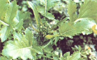
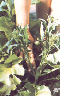

Vegetable harvests don't end with the first frost... if you grow this season-extending crop.
Broccoli raab, or rapini, can play an important role in the home garden. For one thing, it can provide a nutritious green vegetable during very early spring and very late fall ... times when few other crops are productive. And for another, it has a perky, unusual flavor that you just plain won't get from any other vegetable. (The best I can do to describe the rapini "culinary experience" is to say that the leaves taste a bit like turnip greens, while the flavor of the flower shoots resembles that of mustard greens!)
But just what is raab? Well, although this little-known plant is related to both mustard and turnips (indeed, some people raise a similar crop simply by letting ordinary turnip plants mature to the budding stage), Brassica campestris probably most resembles its cousin broccoli. Raab produces a central bud within eight weeks after seed is sown in the garden. When this head is cut, the plant will send up smaller side shoots with dime-sized tips. You can harvest these tasty second shoots and, a short while later, even gather a third cutting!
Don't wait until your first pickings are as large as broccoli heads, however ... or the much smaller buds will go to flower-and then seed-while you're still hoping for them to fatten up. Because so many American raab-growing novices have made precisely that mistake, one seed company offers the vegetable for sale to "European customers only" (rapini's often grown in Europe), just to reduce the number of gardeners who "misraise"-and are likely to complain about-the plant!
Despite its difference from broccoli, though, raab prefers the same growing season as does its Brassica relative: It will tolerate light frosts, but will bolt to seed in hot weather. Here in South Carolina, I sow my fall crop about six to eight weeks before the date of the first expected frost ... and plant my spring crop quite early in the year, while the soil temperature is still in the mid-40's! (As the season progresses and the spring-planted raab deteriorates, I often set tomato plants among the Brassica, letting the two crops share space for a while, and later pull the finished raab out and feed it to my livestock.) Some growers also make late fall sowings-which they then mulch over during the cold months, especially if their local winters are typically harsh-for extra-early spring harvests.
To plant, I open a 50-foot furrow and line it with about 25 pounds of rough compost. (Rapini doesn't require heavy fertilization, but does appreciate a bit of a nutritional boost. It also prefers soil with a pH above 6.0.) 1 top my compost with a layer of earth, sprinkle seeds thinly in this loam, and cover them with a half-inch more of soil.
Although some growers crowd their raab by planting on two-inch centers, I prefer to thin my young sprouts until they're six inches apart ... so that they can develop a good quantity of greens. (Pulled seedlings transplant well, and can be moved to another row if desired.)
About six to eight weeks after sowing,, the first heads are usually ready to pick. Raab buds shatter easily, so I cut the stems well below their heads ... taking a cluster of leaves with each. I usually begin harvesting-as early as possible-at one end of my row. Then I move down the line, gathering a meal's worth every day or so. By the time I pick the shoots from the end of my 50-foot row, the plants I started with will have put out their second growth!
To cook rapini, I first strip the leaves from the stem, examine my pickings for insects, and wash the crop in cold water. Then I cut the leaves into strips, slice the stems into serving-sized pieces, and drop everything-buds, leaves, and stems-into rapidly boiling water. (In my experience, this hard initial cooking keeps the vegetable from tasting bitter.) As soon as the leaves are thoroughly wilted, I lower the heat and simmer the mixture for about 15 minutes. Oftentimes, I'll add a small chunk of ham to the pan for flavoring. . .. and then join my family in some good eating!
And once you've sampled boiled raab, you'll want to experiment with other ways of preparing the versatile Brassica. You can, for instance, cook and serve the greens alone ... or eat the steamed stalks as mock asparagus. Third-growth cuttings work particularly well for the latter purpose, since they tend to have many stalks but tiny leaves and well-nigh insignificant heads. (Such shoots are also tasty sliced and stir-fried in a bit of oil that's seasoned with garlic.)
Right now, many growers are watching their gardens slowly die, as the profusion of mature, and nearly exhausted, crops starts to decline. Why not put a row of new life into your plot by sowing some raab?
In a few weeks, you'll be glad you did!
EDITOR'S NOTE: Two sources of broccoli raab seed are Stokes Seeds Inc., Dept. TMEN, 737 Main Street, P.O. Box 548, Buffalo, New York 14240 (one packet-order number 49-costs 45c plus 751 shipping and handling) and Harris Seeds, Dept. TMEN, Moreton Farm, 3670 Buffalo Road, Rochester, New York 14624 (one packet-order number 1232-costs 65c plus $1.00 shipping and handling).
|
 A mature raab head looks like a small broccoli, but it has a flavor all of its own. |
 The leafy side shoots are tasty, too! |
|